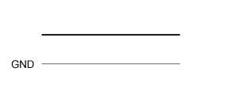
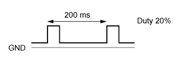
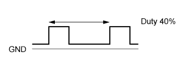
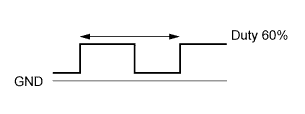
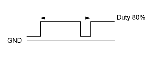
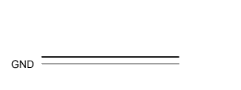

EMISSION CONTROL SYSTEM > DETAILS |
| FUNCTION OF MAIN COMPONENTS |
The main components of the emission control system are as follows:
| System | Component | Function | ||
| Exhaust Emission Control System | ECM | Determines an optimal fuel injection volume based on the signals from various sensors. | ||
| TWC | Oxidizes CO and HC in the exhaust gas and deoxidizes NOx at the same time, to purify them into CO2, H2O and N2. | |||
| Heated Oxygen Sensor | This sensor detects the oxygen concentration in the exhaust emission by measuring the electromotive force which is generated in the sensor itself. For details, see the 1UR-FE ENGINE CONTROL. | |||
| Air Fuel Ratio Sensor | ||||
| Exhaust Emission Control System | Air Injection System | ECM |
| |
| Air Pump Assembly | Uses a built-in DC motor to supply air to the air switching valve assembly. | |||
| Air Switching Valve Assembly | Introduces air that is pumped by the air pump assembly into the exhaust manifold. | |||
| Air Injection Control Driver |
| |||
| Exhaust Gas Recirculation (EGR) System | ECM | Determines the EGR volume in accordance with various sensor signals. | ||
| EGR Valve | Controls the EGR volume in accordance with ECM signal. | |||
| Vacuum Sensor | Detects the negative pressure of the intake manifold and detects malfunctions in the EGR system. | |||
| EGR Cooler | Cools the EGR gas. | |||
| Evaporative Emission Control System | ECM | Sends signals to the VSV for EVAP to control the purge flow. | ||
| Charcoal Canister Assembly | Contains activated charcoal to absorb the fuel vapor that is created in the fuel tank. | |||
| VSV for EVAP | Opens in accordance with the signals from the ECM when the system is purging, in order to send the fuel vapor that was absorbed by the charcoal canister assembly into the intake manifold. | |||
| OPERATING CONDITION |
Air injection system is operated under the following conditions:
| Engine Coolant Temperature | 5°C to 45°C (41°F to 113°F) |
| Intake Air Temperature | 5°C (41°F) or more |
| SYSTEM CONTROL |
The emission control system has the following features:
| System | Outline |
| EGR Control | Based on the signals received from the various sensors, the ECM determines the EGR volume via EGR valve in accordance with the engine condition. |
| Air Injection System | The ECM controls the air injection time based on the signals from the crankshaft position sensor, engine coolant temperature sensor, mass air flow meter and air pressure sensor. |
| Evaporative Emission Control | The ECM controls the purge flow of evaporative emission (HC) in the charcoal canister assembly in accordance with the engine conditions. |
| FUNCTION |
EGR System
This system is designed to help reduce and control NOx formation due to a reduction of peak temperature in the engine combustion chamber, which is accomplished by the introduction of an amount of inert gas into the intake manifold.
Air Injection System
To ensure the proper warm-up performance of the Three-Way Catalytic converters (TWCs) after starting a cold engine, an air injection system is used.
This system is comprised of an air injection control driver, an air pump assembly, and 2 air switching valve assemblies with built-in air pressure sensors.
The air switching valve assemblies provided on each bank are controlled independently by the ECM and the air injection control driver.
The ECM estimates the amount of air injected into the TWCs based on signals from the mass air flow meter in order to regulate the air injection time.
Evaporative Emission Control
The charcoal canister stores the fuel vapors that have been created in the fuel tank.
The ECM controls the VSV for EVAP in accordance with the driving conditions in order to direct the fuel vapors into the engine, where they are burned.
| CONSTRUCTION |
Three-Way Catalytic Converter (TWC)
4 TWCs are used.
| *1 | TWC | - | - |
Air Pump Assembly
Each air pump assembly consists of a DC motor, an impeller and an air filter.
The air pump assembly supplies air into an air injection control valve using its impeller.
The air filter is maintenance-free.
| *1 | Air Pump Assembly | *2 | Impeller |
| *3 | DC Motor | - | - |
| *a | Air Pump Assembly Cross Section | - | - |
 | From Air Inlet |  | To Air Switching Valve Assembly |
Air Switching Valve Assembly
The air switching valve assembly is operated by a DC motor to control air injection and prevent back-flow of exhaust gas. Opening timing of the valve is synchronized with the operation timing of the air pump assembly.
An air pressure sensor is built into the corresponding air switching valve assembly.
The air switching valve assemblies for bank 1 and bank 2 have the same basic structure and function.
| *1 | Air Switching Valve Assembly (Bank 2) | *2 | Air Switching Valve Assembly (Bank 1) |
| *3 | Valve | *4 | DC Motor |
| *a | Cross Section | - | - |
| Air In | | Air Out |
Air Pressure Sensor
The air pressure sensor consists of a semiconductor, which has a silicon chip that changes its electrical resistance when pressure is applied to it. The sensor converts the pressure into an electrical signal, and sends it to the ECM in an amplified form.
The air pressure sensors for bank 1 and bank 2 have the same basic structure and function.
The ECM detects operation of the air injection system based on signals from the air pressure sensor as follows:
Air Injection Control Driver
A semiconductor type air injection control driver is used. Activated by the ECM, this driver actuates the air pump assembly and the air switching valve assembly.
The air injection control driver also detects failures in the input and output circuits of the air injection driver and transmits the failure status to the ECM via duty cycle signals.
For details of the control of the air injection control driver, see the following system chart:
| Condition | AIRP | AIRV | Output (Duty Cycle Signal) |
| Open circuit in line between AIDI and DI terminals. | - | - |  |
| Failure in line between ECM terminals and air injection control driver. | - | - | |
| Output failure at air injection control driver. (Failure in air pump assembly actuation circuit) | - | - |  |
| Output failure at air injection control driver. (Failure in air switching valve assembly actuation circuit) | - | - |  |
| Overheat failure of air injection control driver. | - | - |  |
| Normal | On | On |  |
| Off | Off |  | |
| On | Off | ||
| Off | On |
EGR Valve
A step motor is used on the EGR valve to enable the ECM to directly control the EGR valve.
The water circulates through the EGR valve to ensure proper cooling performance.
| *a | EGR Cooler Cross Section | *b | Out |
| *c | In | *d | From EGR Cooler |
| *e | To Intake Manifold | - | - |
| Exhaust Gas | | Engine Coolant |
EGR Cooler
The water-cooled type EGR cooler is used in the EGR passage between the cylinder head and EGR valve.
In the water-cooled type EGR cooler, engine coolant flows to the 4-layered gas passage to cool down.
| *1 | EGR Cooler | *2 | Engine Coolant Passage |
| *3 | Exhaust Gas Passage | - | - |
| *a | A - A Cross Section | - | - |
| Engine Coolant | | Exhaust Gas |
Vacuum Sensor
The vacuum sensor consists of a silicon chip that changes its electrical resistance when pressure is applied to it. The sensor converts the pressure into an electrical signal, and sends it to the ECM in an amplified form.
| *1 | Silicon Chip | - | - |
| OPERATION |
Air Injection System
The ECM estimates the amount of air injected to the TWCs based on signals from the mass air flow meter in order to regulate the air injection time.
EGR System
The ECM controls the amount of EGR valve lift in accordance with engine condition to regulate the amount of recirculating exhaust gas.